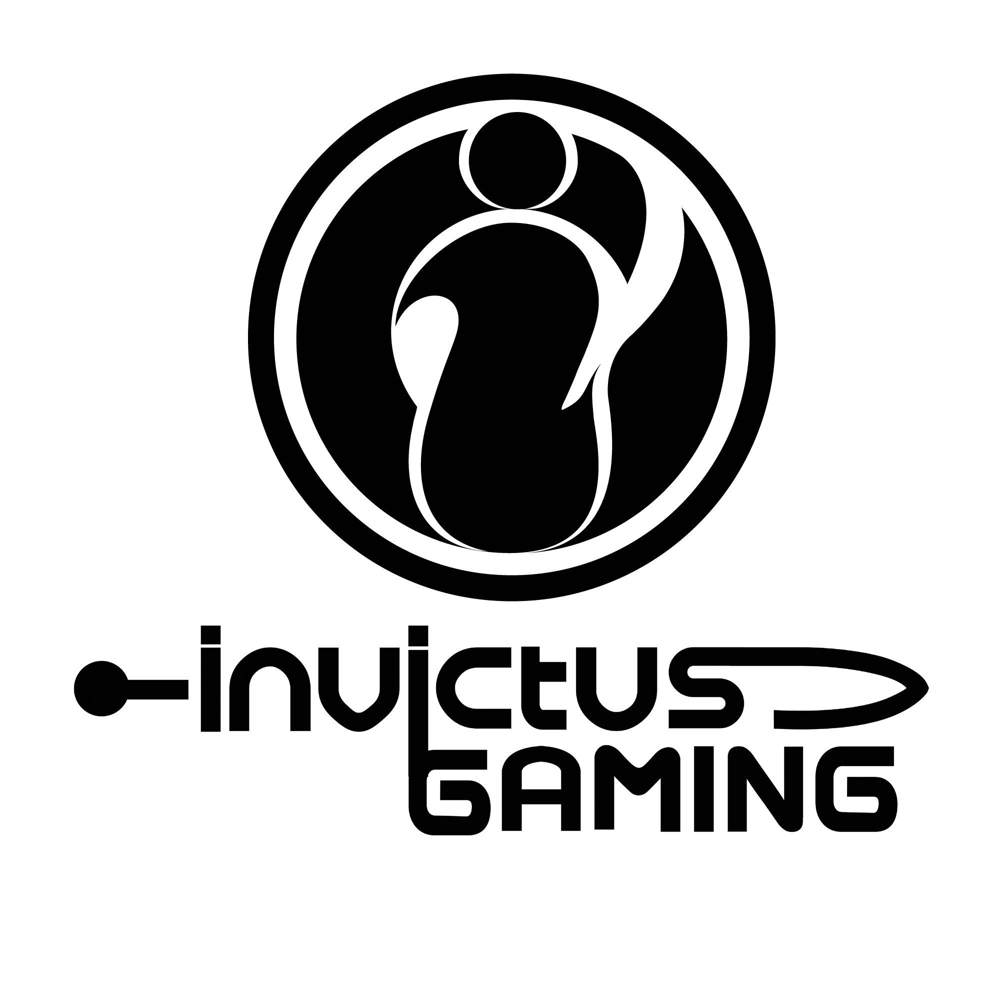

冠军战队

Invictus Gaming
Invictus Gaming（IG）是中国顶尖的电子竞技战队之一，以其在英雄联盟职业联赛中的卓越表现而闻名。
ig夺冠是2018年，S8赛事RNG爆冷被淘汰，FNC止步八强，最终IG战队力挽狂澜拿下冠军。 2018年LPL夏季赛上，iG战队成功杀进夏季赛决赛，在决赛上以2：3败于RNG战队取得亚军，同时以全年积分最高队伍获得参加2018英雄联盟全球总决赛的资格。接下来在全球总决赛上iG战队以3：0战胜FNC战队夺得LPL首个世界赛冠军。 ig是代表LPL赛区第一次在世界总决赛中拿到了第一个冠军，这是整个LPL赛区整整期盼了7年的第一个世界冠军，而S赛更是英雄联盟赛事中含金量最高的比赛，这个冠军有着极强的纪念意义。
ig团队历史 2011年8月，iG电竞俱乐部成立英雄联盟分部，在WCG2011中国区总决赛iG战队战胜WE战队夺得冠军。 2012年7月，iG战队英雄联盟分部以2：0战胜NA战队成功晋级2012英雄联盟全球总决赛。2012年10月，在第二届英雄联盟全球总决赛iG战队败于M5战队，止步总决赛八强。 2013年iG战队英雄联盟分部在SWL第二赛季的总决赛上迎来了老对手WE战队，在前两场比赛中iG和WE各胜一局，第三局iG抓住WE失误，成功拿下比赛，赢得冠军。 2014年iG战队英雄联盟分部在第一届德玛西亚杯上以3：2战胜WE战队夺得冠军，LPL春季赛季后赛，iG战队0：3败于EDG战队取得亚军。2014年LPL夏季赛iG战队以2胜9平7负积15分，未能进入季后赛。 2015年iG战队英雄联盟分部在LPL春季赛，iG战队顺利晋级季后赛，在半决赛上以1：3不敌EDG战队，随后又以3：1战胜了snake战队，取得春季赛季军。 2016年iG战队英雄联盟分部在LPL春季赛，iG战队挺近季后赛，在季后赛以0：3败于snake战队止步八强。 2017年iG战队英雄联盟分部在LPL春季赛，iG战队挺进季后赛，在季后赛以1：3惜败NewBee战队。2017年德玛西亚杯苏州站上iG战队败于IM战队止步四强。